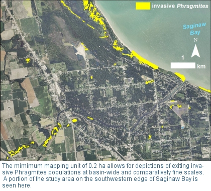

Forecasting Potential Phragmites Coastal Invasion Corridors
Template #68

1.) Through a cooperative effort with Michigan Tech Research Institute (MTRI), a spatial analyst lab, we used satellite data (PALSAR) to create a basin-wide map of Phragmites in the Great Lakes. The mapping effort also was supported by GLRI funds from the USFWS. The basin-wide map of the US coastal zone shows variability in the distribution of Phragmites, with certain regions (e.g., western Lake Erie, southern Lake Huron, Green Bay of Lake Michigan) supporting extensive Phragmites. This mapping product represents mature invasive Phragmites stands that are 0.2 ha or larger. Map accuracy was determined using an extensive network of field validation points. The type of data and analysis methods used do not easily map the native Phragmites or sparse stands at the expansion front.
2.) Many climate models for the Great Lakes predict lower lake levels, which can expose fertile wetland bottomlands to invasive species such as Phragmites. Using LIDAR data that were collected as part of a NOAA GLRI project, we determined what bottomlands may be exposed under reduced lake-level scenarios and become potential corridors for Phragmites invasion. We performed a simple vulnerability analysis related to proximity to current Phragmites stands to assist managers with early detection and control.
3.) We have preliminary results from a more rigorous vulnerability analysis that involves compiling large-scale, GIS-based environmental drivers for the Great Lakes basin and relating them to current Phragmites distribution. This represents a new frontier in large-scale Phragmites ecology that has never before been performed. Preliminary results indicate that three primary variables (i.e., nitrogen concentration, proximity to agriculture, and population density) are associated with extensive invasive Phragmites stands. Using species distribution modeling, we are using key environmental variables and data on the mapped Phragmites to create a spatial habitat suitability index that indicates areas that are highly vulnerable to Phragmites invasion. This vulnerability map can be used by managers for early detection, monitoring, and control, especially in areas being restored under the GLRI.
4.) Scientists from the USGS Great Lakes Science Center worked with staff at the USGS Center for Integrated Data Analytics to make the mapping data available to the public using the GLRI GeoNetwork. The GeoNetwork is primarily a metadata catalog that describes the availability and structure of geospatial data sets produced by GLRI projects but also supports the graphical interpretation of these products through interactive maps that allow users to view and print depictions of available data at custom scales (https://cida.usgs.gov/glri/geonetwork/srv/en/main.home). An online decision support tool is being developed to allow users to access the mapping and modeling data produced in this study.
Current climate-change models predict significantly lower water levels in the Great Lakes that would expose large areas of fertile bottomlands to invasion by non-native Phragmites australis (henceforth Phragmites) and other aggressive plant species (Croley 1990, Smith 1991, Magnuson et al. 1997, Lofgren et al. 2002, Kling et al. 2003). By altering ecological processes, changes in climatological, hydrologic, and nutrient-loading patterns could increase the spread of non-native Phragmites into existing Great Lakes coastal and diked wetlands (Galatowitsch et al. 1999). These aggressive invasive plants can drastically reduce habitat diversity and function (Chambers et al. 1999), thereby affecting a multi-billion-dollar regional fishery and other dependent wildlife.
Phragmites forms impenetrable stands with thick detritus that help it to outcompete native flora and quickly degrade the functions and values of large areas of highly productive coastal wetlands (Minchinton et al. 2006). Established stands often reach heights in excess of 4 m and impair the human use of beaches and recreational areas. Invasion success of Phragmites has been related primarily to hydrologic alteration (Welch et al. 2006) as well as shoreline development and nitrogen pollution (King et al. 2007).
The cost to control established Phragmites stands is enormous and often overwhelming, necessitating improved strategies for limiting spread and identifying the need for treatment early. Unfortunately, public and private resource managers lack detailed maps of both existing Phragmites colonies and areas vulnerable to Phragmites invasion under current or predicted water levels. Therefore, a thorough assessment of the species’ distribution throughout the U.S. Great Lakes shoreline (Fig. 1), as well as the prediction of pathways of spread during climate change, will enable managers to target and prioritize control efforts.
Goals:
- Identify current Phragmites distribution in the Great Lakes coastal zone,
- detect potential areas vulnerable to invasion due to influences such as altered water levels, nutrient and sediment loading, and shoreline development, and
- communicate project results to researchers, managers, policy makers, and the general public to guide future management and restoration efforts throughout the Great Lakes basin.
Objectives:
- Use remote sensing to map the current extent of Phragmites in the Great Lakes coastal zone,
- assess areas vulnerable to the spread of Phragmites under predicted climate-change scenarios and environmental influences (e.g., nutrients, hydrology, shoreline development), and
- give presentations, write a USGS fact sheet, create a web-based decision-support tool, and begin work toward communicating project results to the public and decision makers verbally and in journal publications.
The basin-wide map of current Phragmites distribution that will be produced will be useful to natural resource managers and will provide a basis for basin-wide efforts to control Phragmites, especially in areas where preservation of native biodiversity is particularly important. As nothing like this currently exists, such a map will prove invaluable for controlling the spread of this invasive species. Wetlands with previously undiscovered stands of Phragmites will be identified, and restoration efforts can be directed at these areas. Predicting corridors for future invasion by assessing vulnerability of exposed bottomlands to expansion will allow managers to target and prioritize control efforts, especially in relation to current coastal wetland restoration efforts.
This project addresses mission, vision, and multiple priorities identified in the USGS Strategic Plan and the USGS – Great Lakes Science Center Strategic Plan. It is consistent with the U.S. Climate Change Science Program strategic goals, the research goals of multiple programs within USGS (i.e., Ecosystems, Invasive Species, Fisheries: Aquatic and Endangered Resources), and initiatives endorsed by the Great Lakes Regional Collaboration. The USGS – Great Lakes Science Center (USGS – GLSC) has the mission, staff, facilities, and equipment to lead the cutting-edge research involved in this basin-wide effort.
Phragmites Mapping – A map of the current Phragmites distribution along the U.S. Great Lakes coastal zone (10-km buffer inland from shore) will be generated and published as a web-based decision-support tool.
- Alaska Satellite Facility (ASF) will procure the 260 multi-temporal radar imagery scenes (dual-polarized ALOS PALSAR) necessary to map the U.S. Great Lakes shoreline and will georegister the scenes to within 1-2 pixels.
- Using the georectified scenes, Michigan Tech Research Institute (MTRI) will map current extent of Phragmites by basin using algorithms developed and tested for this purpose.
- Ground-truthing of the mapping effort will be performed by MTRI. Field crews will collect pre-selected GPS points and digital photos of Phragmites and other vegetation and will transmit these data to MTRI image analysts through a Google Earth field tracking system.
- Preliminary maps of each basin will be distributed via a web-based tool supported by USGS Center for Integrated Data Analytics (CIDA) under a separate GLRI project. Validation by MTRI of maps to 95% confidence using ground-truth data will begin in FY10 and will be finalized in FY11.
Vulnerability Assessment (Predicting Corridors of Expansion) - To understand the large-scale factors influencing Phragmites distribution, GIS analyses and statistical methods will be used to relate current Phragmites extent to variables such as, but not limited to, slope and topography, nutrient loading to the coastal zone, proximity to urban and agricultural land-use types, shoreline development, and water depth. The major influencing factors will be used to develop a GIS modeling framework to identify areas vulnerable to invasion. Using these FY10 results, FY11 efforts will advance prediction of Phragmites expansion in the coastal zone given the water-level scenarios of current climate-change models.
- USGS -GLSC will obtain LIDAR non-bare earth topographic and bathymetric data as 1-m DEMs from NOAA Coastal Services Center and USACE Joint Airborne Lidar Bathymetry Technical Center of Expertise (JALBTCX). Other bathymetric data sources will be researched and acquired, if available, for the shoreline extent from Cleveland, OH to Port Huron, MI, where turbidity precluded collection of LIDAR data.
- The bathymetric data will be converted to slopes and water-depth contours for a 0.5 m, 1.0 m, and 1.5 m drop in water level or other relevant water-level scenarios determined by downscaled climate models. LIDAR data also will be analyzed for geomorphic obstructions (e.g., bluffs) to Phragmites expansion. Substrate data will be requested from USACE. A GIS data layer of land use will be generated from the publicly available MIRIS data set. Tributary nutrient-load data and nutrient data from the SPAtially Referenced Regressions On Watershed attributes (SPARROW) model will be acquired from USGS CIDA and the USGS Wisconsin Water Science Center, respectively. Water-level data will be obtained from the NOAA Great Lakes Environmental Research Laboratory website and converted to depth using the LIDAR bathymetric data.
- General linear modeling and regression analysis will be used to determine significant relationships, if any, between current Phragmites occurrence and the above environmental variables (slope, topography, nutrient and sediment loading, land use, shoreline development, water depth, water-level fluctuation).
- To identify areas vulnerable to invasion, we first will map potential wetland area for four water-level scenarios predicted by downscaled climate models or predetermined (i.e., current 2009 levels and a 0.5 m, 1.0 m, and 1.5 m drop in water level). The following two criteria will be used to identify potential wetland area: 1) being at an elevation where mean high water level is between 0.1 m and 2 m and 2) having a substrate other than bedrock. Vulnerable areas will be identified as regions within the potential wetland area with a slope appropriate for Phragmites growth (as identified in #3 above) and with a topographic corridor linking it to the current Phragmites population. Highly vulnerable areas will be identified where nutrients, shoreline development, or other significant variables suggest greater probability for Phragmites expansion.
- The vulnerability maps for each of the water-level scenarios will be published alongside the Phragmites map in the web-based tool. Users will be able to overlay water-level contours for each of the scenarios as well as sites identified as biodiversity protection areas by The Nature Conservancy and other organizations.
Plans for FY11
In FY11, we hope to finalize the validation of the FY10 mapping product and continue enhancing our understanding of Phragmites expansion through 1) predictive species distribution modeling and 2) historic photo-interpretation to describe mechanisms of spatial expansion by Phragmites. Going beyond assessing vulnerability of wetland area, these efforts will allow us to predict with greater certainty where Phragmites will expand. The modeling framework could be extended to describe invasion by other species of interest as well (e.g., Lythrum salicaria, purple loosestrife; Hydrocharis morsus-ranae, frogbit, Typha angustifolia and Typha x glauca; cattail).
Poster Presentations
- Galbraith, D., M. Carlson-Mazur, K. Kowalski, B. Huberty, K. Scarbrough, Z. Laubach, R. Powell, L. Jenkins, C. Brooks, and L. Bourgeau-Chavez. Nov. 2, 2011. Phragmites distribution maps in and near the Huron-Erie corridor. State of the Straight Conference 2011, Eastern Michigan University and University of Windsor, Ypsilanti, MI.
- Galbraith, D., M. Carlson-Mazur, and K. Kowalski. Nov. 2, 2011. Forecasting
Phragmites invasion patterns and habitat suitability in the Huron-Erie corridor.
State of the Straight Conference 2011, Eastern Michigan University and
University of Windsor, Ypsilanti, MI.
Fact Sheets
- USGS Great Lakes Science Center. 2011. Invasive Phragmites australis: mapped
and modeled distribution in the Great Lakes coastal zone. GLSC Fact Sheet
2011-4.
Journal Articles
-
Bourgeau-Chavez, L., K. Kowalski, M. Carlson-Mazur, K. Scarbrough, R. Powell, C.
Brooks, B. Huberty, L. Jenkins, E. Banda, D. Galbraith, Z. Laubach, and K.
Riordan. 2012. Mapping invasive Phragmites australis in the coastal Great
Lakes with ALOS PALSAR satellite imagery for decision support. Special Issue of
the Journal of Great Lakes Research, in review.
- Final Phragmites maps were made available to the general public and land managers through the USGS Center for Integrated Data Analytics (CIDA) GLRI GeoNetwork. The GeoNetwork is primarily a metadata catalog that describes the availability and structure of geospatial data sets produced by GLRI efforts but also allows the graphical interpretation of these products through interactive maps. (https://cida.usgs.gov/glri/geonetwork/srv/en/main.home). Other project-related data publicly available on the existing GeoNetwork include a study area extent, raw lidar topo-bathymetry, the proximity-weighted reduced lake-level scenarios that were derived from LIDAR, a layer showing users where LIDAR data were unavailable, a separate set of reduced lake-level scenarios made possible by NOAA 1-m bathymetric contours, and a variety of base layers.
- The GLRI Phragmites Decision Support Tool (DST) Mapper
(http://cida.usgs.gov/glri/phragmites/) is intended to
provide resource managers with information to strategically develop effective Phragmites control
and invasion prevention programs in the Great Lakes coastal zone (10 km inland
from the shoreline). The Mapper consists of three integrated components:
- A distribution map of large (> 0.2 ha) stands of existing Phragmites.
- A map of estimated Phragmites habitat suitability based on current environmental conditions.
- Corridor networks including reduced lake-level scenarios that are weighted by proximity to existing Phragmites to show likely invasion pathways.
 GLRI Phragmites Decision Support Tool (DST) Mapper
GLRI Phragmites Decision Support Tool (DST) Mapper
Point of Contact:
Kurt P. Kowalski
USGS Great Lakes Science Center,
Ann Arbor, MI 48105
Detroit, MI 48202
E-mail: kkowalski@usgs.gov
Phone: (734) 214-9308